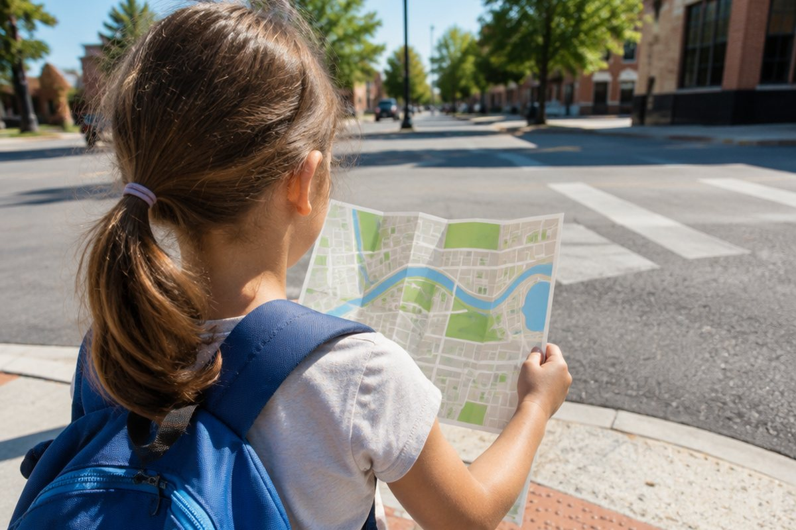

전체 단원 › 5학년 2학기 › 영어 › 길 묻고 안내하기
길을 잃었을 때 영어로 길을 물어볼까?

외국인 관광객이 "Where is the bank?"라고 묻는다면 어떻게 알려 줄까요? 길을 묻고 안내하는 표현을 배워 봐요.
장소 묻기
가고 싶은 곳이 어디인지 물을 때는 "Where is the library?(도서관이 어디에 있나요?)"처럼 Where is 뒤에 장소를 붙여요.
처음 보는 사람에게 물을 때는 "Excuse me.(실례합니다.)"로 먼저 말을 거는 것이 예의예요.
Excuse me. Where is the post office?
방향 알려 주기
"Go straight.(곧장 가세요.)", "Turn left.(왼쪽으로 도세요.)", "Turn right.(오른쪽으로 도세요.)"로 방향을 알려 줘요.
몇 블록을 가야 하는지 말할 때는 "Go straight two blocks.(두 블록 곧장 가세요.)"처럼 말해요.
Go straight one block and turn right.
위치 설명하기
건물의 위치를 말할 때는 next to(~ 옆에), across from(~ 건너편에), between A and B(A와 B 사이에)를 써요.
"It's next to the bank.(그것은 은행 옆에 있어요.)"처럼 It's 뒤에 붙여 말해요. "It's on your left.(왼쪽에 있어요.)"라고 할 수도 있어요.
It's between the school and the park.
핵심 낱말
- Where
- 어디
- straight
- 곧장, 똑바로
- turn left / right
- 왼쪽 / 오른쪽으로 돌다
- next to
- ~ 옆에
- across from
- ~ 건너편에
- between
- ~ 사이에
꼭 알아야 할 표현
| Excuse me. Where is the library? | 실례합니다. 도서관이 어디에 있나요? | 길을 물을 때 |
| Go straight. | 곧장 가세요. | |
| Turn left. | 왼쪽으로 도세요. | |
| Turn right. | 오른쪽으로 도세요. | |
| It's next to the bank. | 은행 옆에 있어요. | |
| It's across from the park. | 공원 건너편에 있어요. | |
| It's on your left. | 왼쪽에 있어요. | |
| Thank you for your help. | 도와줘서 고마워요. |
한 줄 정리
- 장소는 Excuse me. Where is ~?로 물어요.
- 방향은 Go straight. / Turn left. / Turn right.로 알려 줘요.
- 위치는 next to, across from, between으로 설명해요.
학교 교육과정 연결
- [6영02-05] 주변 장소나 위치, 행동 순서나 방법을 간단한 문장으로 설명한다.
- [6영01-04] 일상생활 주제에 관한 담화나 글의 세부 정보를 파악한다.